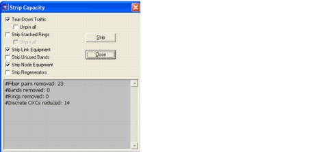
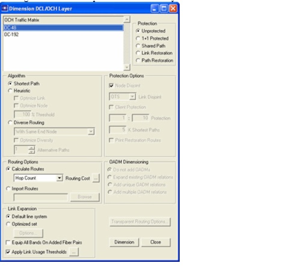
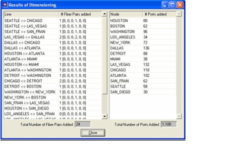
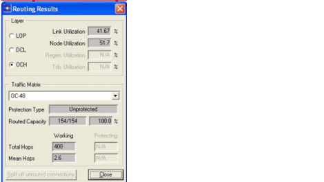
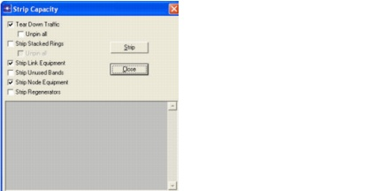
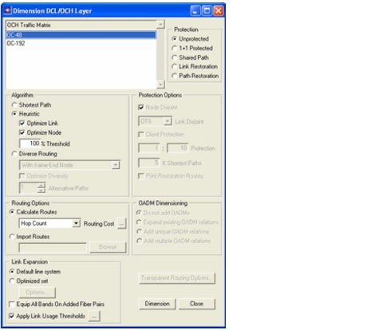
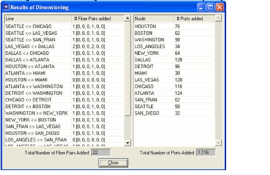

Network Design Operations > Dimensioning
Dimensioning
The following procedure shows how to dimension the OCH layer to accommodate all traffic of a specified OCH traffic matrix in the network. Two routing strategies are described: a shortest-path algorithm and an optimized algorithm. For more information about other dimensioning options, see the SP Guru Transport Planner User Guide.
Procedure 3-5 Dimensioning the OCH Layer
- Open the WDMGuru_Examples project.
- Select File > Open....
- Select the WDMGuru_Examples project, then press Open.
The example project which contains various scenarios loads. The Australia scenario appears in the workspace.
- Select Scenarios > Switch To Scenario > USA to view the USA scenario in the workspace.
- Strip capacity.
- Select Design > Strip Capacity....
- Select Tear Down Traffic to release all OCH and DCL traffic in the network.
- Select Strip Node Equipment to downgrade all discrete nodes to their smallest possible size.
- Select Strip Link Equipment to remove all fiber pairs that carry no traffic. then press Strip.

- Close the Strip Capacity dialog box.
- Dimension the OCH layer (shortest path algorithm).
- Select Design > Dimension DCL/OCH Layer..., and choose traffic matrix OC-48.
This dialog box is used to fully route and accommodate wavelength demands in the network. If needed, extra equipment is installed in the network to make sure all traffic demands can be accommodated.
- Choose Shortest Path (Algorithm).This implies that each connection is routed along the shortest path—that is, the path with the lowest cost—between its two endnodes.
- Choose Unprotected (Protection). This implies that no back-up path is created for the routed connections.
- Choose Hop Count (Routing Cost). The algorithm searches the path with the fewest hops.
- Choose Default line system (Link Expansion). This ensures that all added line systems are of the default type (LH 40-WDM).
- Uncheck Equip All Bands On Added Fiber Pairs (Link Expansion). This means that only the necessary bands are equipped on the added fiber pairs.

- Click Dimension.
The Results of Dimensioning dialog box appears.

.
This dialog box gives an overview of the equipment added in the network to accommodate the traffic matrix OC-48. Pay attention to the total number of fiber pairs and OXC ports to compare these with the results of step 9.5, below.
- Close the dialog boxes.
Inspect the results.
- Select Design > Routing Results.
- Select the OCH layer and the traffic matrix OC-48. As expected, the traffic matrix OC-48 is entirely accommodated in the network. Additional statistics regarding the capacity and hop length are provided.

- Close the dialog box.
Inspect the required equipment.
- Select Info > Network Cost > Node Cost.
The Node Cost dialog box appears with an overview of the required node components and their cost.
- Select Info > Network Cost > Link Cost.
The Link Cost dialog box appears with an overview of the required link components and their cost.
Close the Node Cost and Link Cost windows. Strip capacity.
- Select Design > Strip Capacity....
- Put a checkmark next to Tear Down Traffic, Strip Node Equipment, and Strip Link Equipment, then press Strip.

This removes all traffic and equipment from the network.
- Close the dialog box.
Dimension the OCH layer (heuristic algorithm).
- Select Design > Dimension DCL/OCH layer....
- Select OC-48, Unprotected, Hop Count, and Default line system.
- Select Heuristic (Algorithm) and put a checkmark next to Optimize Link. With this option selected, the heuristic tries to remove poorly utilized line systems, by rerouting traffic along other (longer) routes.
- Put a checkmark next to Optimize Node. With this option selected, the heuristic tries to reroute some of the traffic to downgrade poorly-utilized node facilities and reduce costs.
Note that the latter option is valid only for discrete OCH nodes. You can also specify a threshold: if the threshold indicates 50 percent, the heuristic only attempts to remove fiber pairs (or node types) for which the utilization is lower than 50 percent.
- Enter 100 percent for the Threshold, then click Dimension.

The Results of Dimensioning dialog box indicates that the heuristic results in fewer fiber pairs (on the link between HOUSTON and MIAMI, for example) and smaller OXCs (in node NEW_YORK, for example) than the shortest path algorithm. The number of used OXC ports is higher, however, due to the longer routes taken by some of the connections.

- Close the dialog boxes.
Close the project.
- Select File > Close.
- Select Don't Save in the Close Confirm dialog box.
End of Procedure 3-5
| Home © 1987-2007 OPNET Technologies, Inc. All Rights Reserved. This software may be covered by one or more U.S. Patents. See complete patent notice in the Legal Notices section. OPNET Support Center |